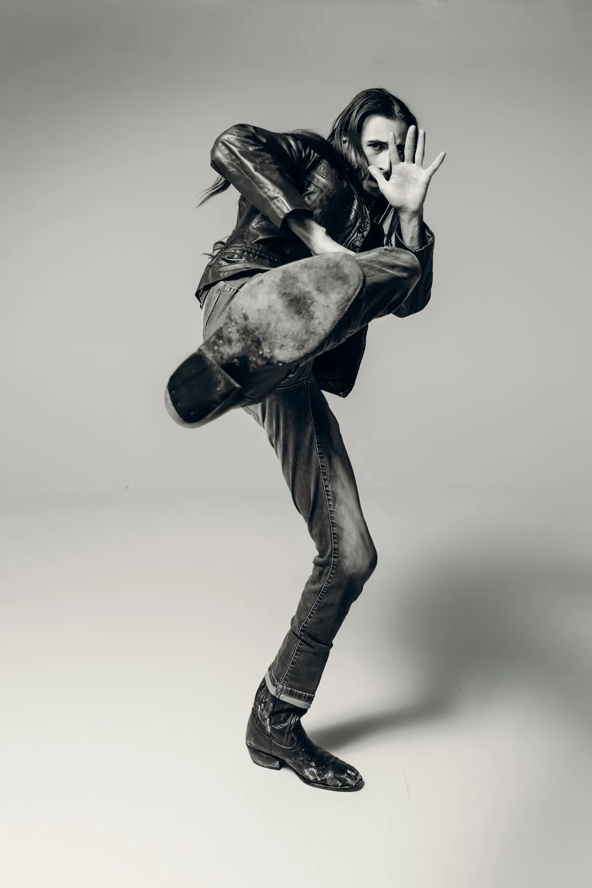
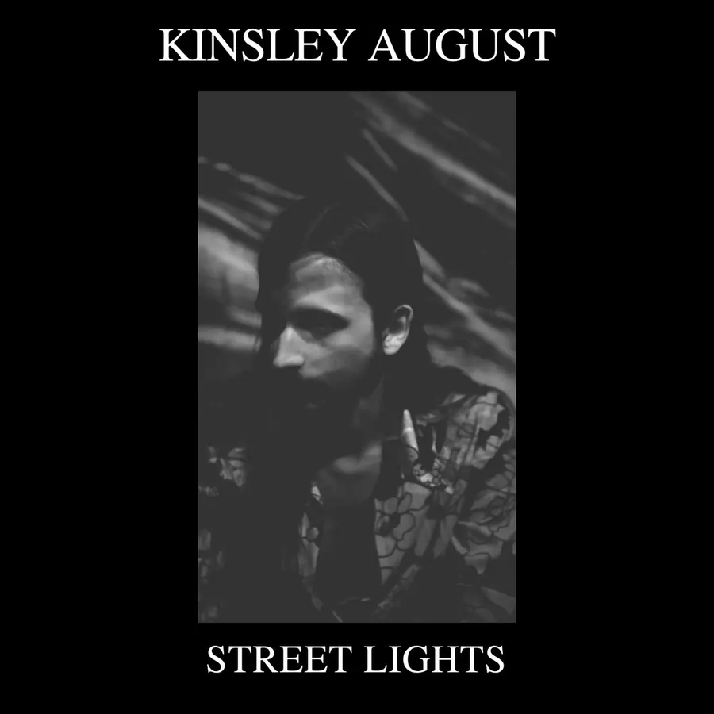
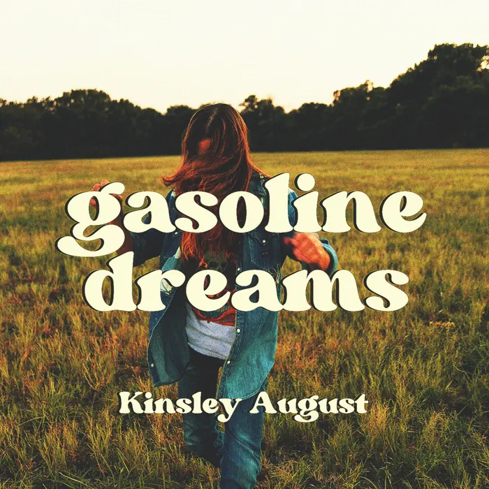
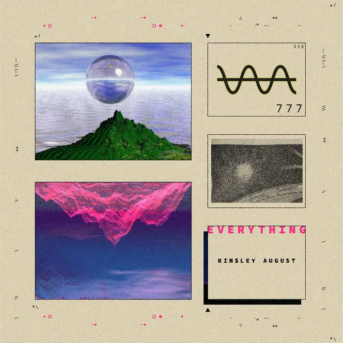
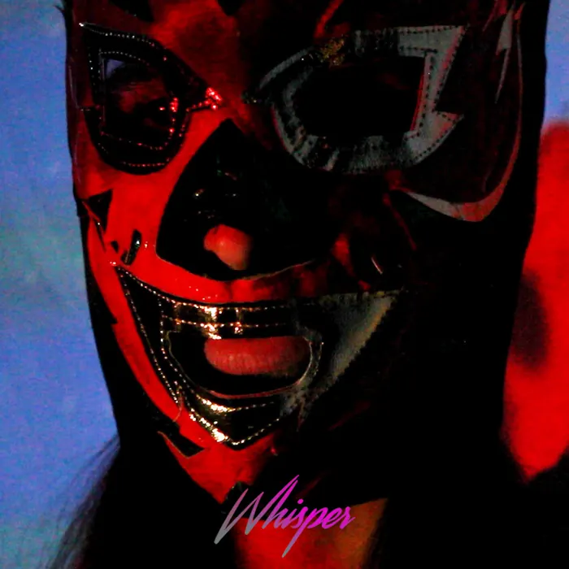
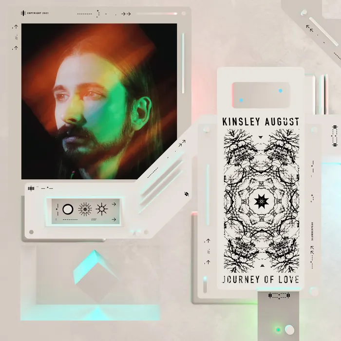
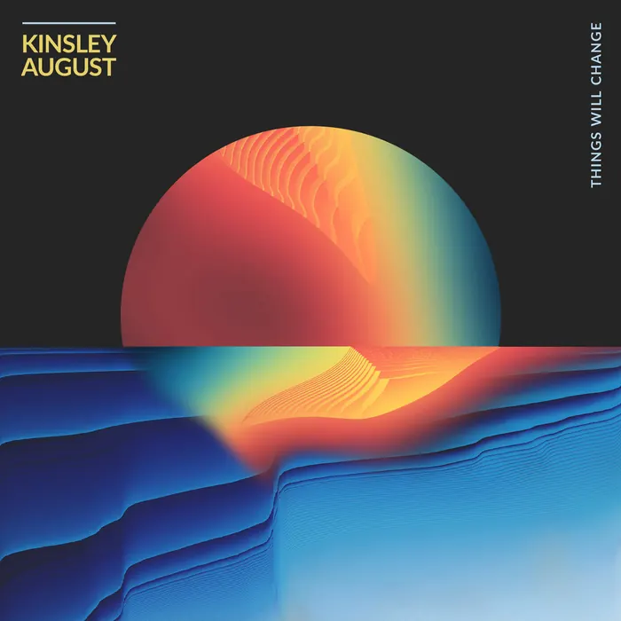
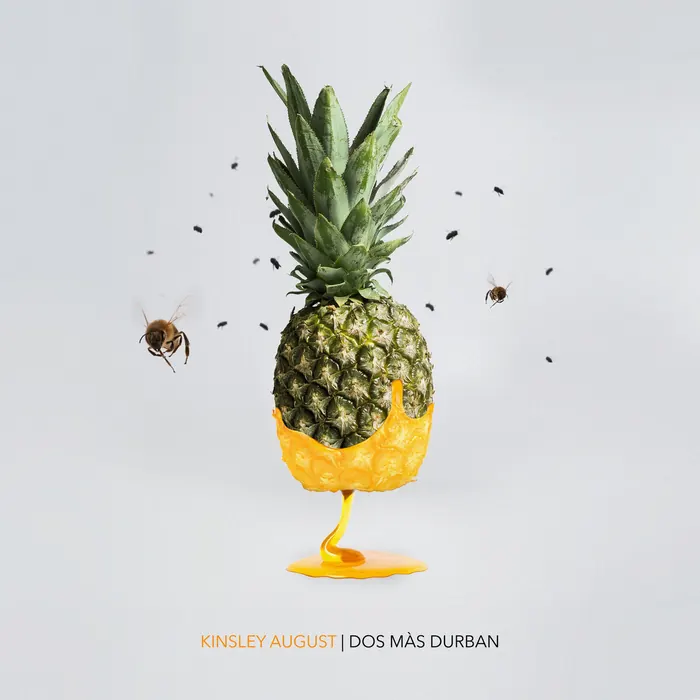

Dallas, Texas
A human-made vibration of sound
Psychedelic rock grooves, dreamy pop synths, trippy spaced-out guitars and self-reflective lyrics.


New single, August 1, 2026
Street Lights
A piano ballad recorded live at Studio 551 in Fort Worth.
Travis Grubbs, guitar
Phillip Smith, bass
Discography
All musicNineteen releases and counting






October 20, 2025
Gasoline Dreams
Recorded with Bryan David at Anthem Recording Studio in Plano, with Jordan Sutton on keys.
About
Organic, self-reflective, made in Dallas
Dreamy pop synths and trippy spaced-out guitars meet sultry vocal melodies and lyrics that look inward.